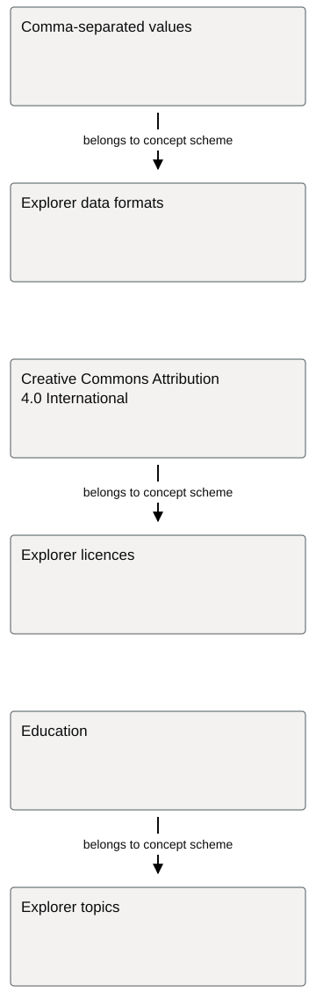

Distinguish a format, a licence and a topic
Retained metadata extension. Its graph is supplied as RDF or geospatial metadata; Markdown-core conformance is not asserted.
Question
How can an AI distinguish the CSV format, a licence term and an education topic, and does their presence establish a dataset's reuse conditions?
Answer from the retained evidence
Comma-separated values belongs to Explorer data formats. Creative Commons Attribution 4.0 International belongs to Explorer licences. Education belongs to Explorer topics. The three memberships keep these meanings separate. The fixture contains vocabulary terms and schemes, with no assertion applying the licence term to an actual dataset.
Search for Comma-separated values, inspect its scheme, then compare the licence and topic records. Keep the identifiers and the three source edges with the answer. The recorded validation result is a separate evidence item.
Complete retained graph
6 records; 3 directed assertions.

Every arrow is a retained assertion. The complete records and assertions are in the evidence file.
- Inspect Comma-separated values in Reader
- Inspect Explorer data formats in Reader
- Inspect Creative Commons Attribution 4.0 International in Reader
- Inspect Explorer licences in Reader
- Inspect Education in Reader
- Inspect Explorer topics in Reader
Limits of this answer
- Vocabulary membership does not establish a dataset's licence or access conditions.
- These six terms are an illustrative fragment, not a complete government vocabulary.
- The three disconnected memberships do not create relationships between the terms.
Inspect or use the evidence
Complete worked-question evidence · Context for an AI client · Replay the record journeys · Authored question
- data/manifest.json —
b28530cea58ad7e4c92749f6f346845664be2a9c3a34e9f93c36ad7020809248 - data/ontology.json —
17fb260ca2785d5b9d66b2162cbb34a04aded6440c9bf248695480d144189215 - data/records.json —
a043a33795881d37272a6e64d9134f180094a8f54f9b4adb61a7039f4bdab384 - data/relationships.json —
45927dffee764964a51b90031eaf950e73e052d88b18a43beaab17d906a07beb - data/shacl.json —
afd96206eccb6ce53afac7b710d4f7a83419179d482aeff903f7bd5898b441ea - okf-explorer.json —
649cd44560542fead3dc2f91e22caf210cb3707ac7c07141e93fb95d5f29d781 - source.nt —
900ee5966d15e6cb2e4040c4b1c3c5293659a35239e5458a6ee96d928d01472a